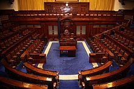

Sob a liderança de Dublin, Sir Edward Carson do Partido Unionista Irlandês e os habitante do Norte, apoiados por Sir James Craig do Partido Unionista de Ulster, tornaram-se fortemente militantes, a fim de se oporem à Coerção de Ulster. Depois do Artigo Principal que passou no Parlamento em Maio de 1914, para evitar a rebelião com Ulster, o Primeiro-Ministro britânico H. H. Asquith, introduziu uma regra ratificativa, relutantemente, admitindo a liderança por parte da Irlanda, que prevê a exclusão temporária do Ulster, a partir do funcionamento por um período experimental de seis anos, como ainda indecisos com o novo conjunto de medidas a adoptar para a área. Apesar de ter recebido o Royal Assent e de ser colocado sobre o estatuto, o terceiro Acto do Governo Irlandês de 1914, foi suspenso até depois da Primeira Guerra Mundial. Para assegurar a aplicação da lei no final da guerra, Redmond e os seus voluntários irlandeses apoiaram os Aliados na Primeira Guerra Mundial, juntando 175.000 membros do regimento irlandês à 10.ª e à 16.ª Divisão Irlandesa do Reino Unido, enquanto que os Unionistas ingressaram na 36.ª Divisão de Ulster do Novo Exército Britânico.

Em Janeiro de 1919, após as eleições gerais de 1918, 73 dos 106 membros eleitos para o Parlamento eram do Sinn Féin, que se recusou a tomar os seus lugares na Câmara dos Comuns, no Reino Unido. Em vez disso, eles criaram um Parlamento irlandês chamado Dáil Éireann. Este, emitiu em Janeiro de 1919, uma Declaração de Independência e proclamaram a República da Irlanda. A declaração foi principalmente uma reafirmação da Proclamação de 1916, com a disposição adicional que a Irlanda não era mais um território pertencente ao Reino Unido. A nova República da Irlanda só foi reconhecida internacionalmente pela República Socialista Federativa Soviética Russa. A República do Aireacht (ministério) enviou uma delegação ao abrigo do ceann Comhairle Seán T. O'Kellypara a Conferência de Paz de Paris de 1919, mas não foi admitido.
Após lutarem amargamente na Guerra da Independência e, após terem sido dominados em Julho de 1921, representantes do governo britânico e delegados irlandeses para o Tratado, liderados por Arthur Griffith, Robert Barton e Michael Collins, negociaram o Tratado Anglo-Irlandês, em Londres, de 11 de Outubro a 6 de Dezembro de 1921. Os delegados irlandeses criaram uma sede em Hans Place, em Knightsbridge, e ali estiveram reunidos em privado até que às 11:15 da manhã do dia 5 de Dezembro, tomaram a decisão de recomendar o Tratado ao Dáil Éireann. De acordo com o Tratado, os britânicos concordaram com a criação de um Estado independente irlandês, através do qual o Estado Livre Irlandês tinha o estatuto de domínio. Segundo o Segundo Dáil Éireann, o tratado foi restritivamente ratificado.
O Tratado não era inteiramente satisfatório para ambos os lados. Deu mais concessões para os irlandeses do que os britânicos tinham intenção de dar, mas não foi suficientemente longe para satisfazer as aspirações republicanas. O novo Estado Livre Irlandês, em teoria, cobria toda a ilha, sujeita à condição de que os seis condados do nordeste, denominados "Irlanda do Norte", que tinha sido criado em 1920, poderia optar por sair e escolher permanecer parte integrante do Reino Unido, o que eles fizeram. Os restantes vinte e seis condados (originalmente "Irlanda do Sul", no âmbito da Lei) tornou-se o Estado Livre Irlandês, uma monarquia constitucional sobre a qual o monarca britânico reinava (a partir de 1927 com o título Rei da Irlanda). Ele tinha um Governador-Geral, uma Parlamento bicameral, um gabinete chamado de "Conselho Executivo" e um primeiro-ministro, chamado Presidente do Conselho Executivo.